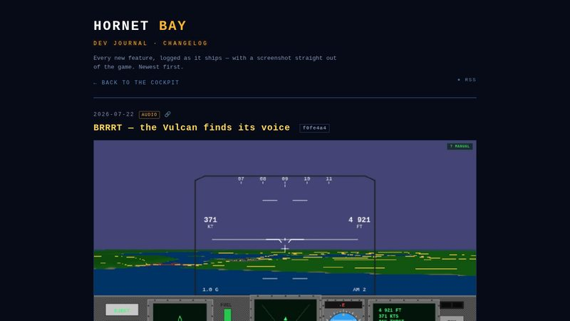
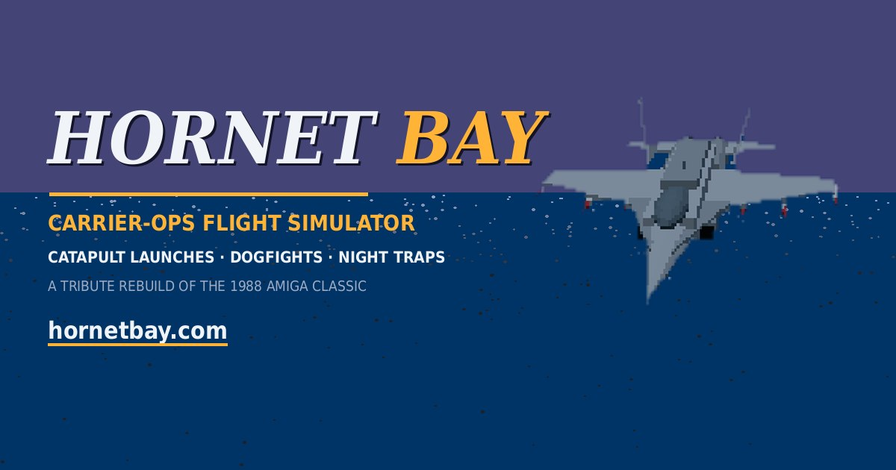

The journal gets permalinks, tags and an RSS feed 786c616

Every post on this page now has its own permalink — hit the 🔗 icon to copy a direct link to any entry (handy for tweeting a specific feature). Posts carry a metadata row with ISO date, topic tags and the commit hash, the page ships JSON-LD structured data for search engines, and there’s an RSS feed if you want every new entry as it lands.
BRRRT — the Vulcan finds its voice f0fe4a4

Hold the trigger on the gun and she sings: a proper A-10-style BBBBRRRRR gatling roar loops for as long as the burst lasts, then cuts when you let off. And cycling weapons with ENTER now gets you a spoken callout — GUNS, SIDEWINDER, AMRAAM — so you always know what's live without looking down.
Rain no longer blots out the map f0fe4a4

Bug fix: with rain selected, the briefing and plane-select maps were being swallowed by the weather — rain streaks and storm murk over the planning view. The satellite map now stays crisp and readable whatever the forecast; the weather only starts when you do.
Rain weather, with a menu toggle 31f1adc

A new R — TOGGLE CLEAR or RAIN WEATHER row on the main menu (and on the plane-select map). Rain streaks slant past the canopy with your speed, the sky closes over in overcast gray, and visibility drops. Missions are still authored clear unless you ask for weather.
Runways flash at night: the rabbit + threshold strobes 31f1adc

Every runway end now has the real approach-lighting choreography: a sequenced flasher chain — the rabbit — chasing in toward the threshold twice a second over the last 750 m, a 300 m crossbar, and REIL strobes flashing at the threshold corners. Edge lights stay steady, per the real books.
Strobes and tower beacons light up the night 31f1adc

Aircraft now run proper night lighting: steady red/green position lights, the white tail strobe double-flashing, and a red anti-collision beacon. The tall stuff fights back too — red obstruction beacons blink on the downtown towers, the Transamerica tip, and the top of Sutro, warning you how close the skyline really is.
Fuel goes twice as far; F-16 carrier bug fixed 31f1adc

Fuel burn was punishingly high — it's now halved for both jets, roughly doubling your time in the air. And the carrier plane-select no longer offers the F-16: with no tailhook it can't work the boat, so the option is gone (and the dormant hook mesh removed from the model) instead of biting you on launch.
Social cards: OG image & Twitter card cb689f1

Links to hornetbay.com now unfurl into a proper card everywhere — Open Graph for Facebook/Discord/Slack, summary_large_image for X. The artwork is pure in-game: the Hornet cut out of a live capture and composited over the Bay, in the style of the 1988 title screen.
Follow the Hornet on X c316f10
The game has a home on X now: @hornetbay — profile and cover art rendered from in-game captures, recreating the 1988 original’s title screen. Link lives in the home-menu footer.
MiG-29 Fulcrum refined from schematics 53c4c5a

The enemy bogie got the full reference treatment: light Soviet gray scheme, leading-edge root extensions, dorsal louvers, nose pitot, ventral strakes, underwing AAMs — and red stars on the wings and fins, so there’s no mistaking the opposition when one flashes past the canopy.
Air Force One: now the 1994-correct VC-25A 4666e35

The game was designed in 1988, when the President flew a Boeing 707 — but it’s set in September 1994, when the VC-25A (a Boeing 747-200B) had the job. Air Force One is now the right airplane, wearing the full Loewy livery: white over light blue, midnight-blue cheatline, gold pinstripe, and the flag on the tail. Mind the paint.
F-16 refined from photos 5acc940

The Viper got its photo pass too: dark radome, bubble canopy, a chin intake with a real mouth you can see down, the M61 gun port, ventral fins, and low slab stabilators.
F/A-18 refined from photos ce5db23

Six reference photos later, the Hornet wears a proper nose and tinted canopy, leading-edge extensions, a truer wing taper, twin canted fins in the right place, intake mouths, tailpipes, the beaver tail, dorsal antenna, and the arrestor hook. The cockpit DDIs grew their twenty real pushbuttons as well.
Night ops lighting b5c1618

After dark the Bay wakes up: warm city windows, runway edge lights, carrier deck lights, and headlight/taillight strings crawling the highways below.
Aircraft gallery b5c1618

Every machine in the game gets its pedestal: arrow keys rotate, +/− zooms, number keys switch airframes, and each gets its name plate and a line of flavor text.
Realistic attitude indicator b5c1618

The panel ADI now behaves like the real gyro instrument — put the jet in a bank and the little airplane and horizon bar tell the truth about it.
Road traffic & proper markings b5c1618 8644229

The Bay Area highways carry live traffic now — cars glued to the asphalt in their lanes (no more driving on the grass), over roads painted with center dividing lines and lane dashes, draped over the terrain including the bridge decks.
C-13 steam catapult launches 2a90ebb

Carrier departures run off the C-13 catapult now: taxi to the shuttle, tension, holdback release, and the stroke flings you off the bow. The deck crew parks the other jets clear of the catapult track.
The Hornet shatters on impact 230cb8a

Prang the jet and she comes apart properly — fireball, smoke, and debris scattering across the terrain instead of a polite fade to black.
Renamed: HORNET BAY f5c2e39 e4dd37f
The tribute got its own name and its own home: HORNET BAY, flying out of hornetbay.com.
Banked-lift flight dynamics, free-fire weapons, ejection 4e1e68a

The flight model grew up: bank the wings and lift pulls you around the turn, guns and missiles are free to fire outside missions, and there’s a working ejection seat for when the math stops working.